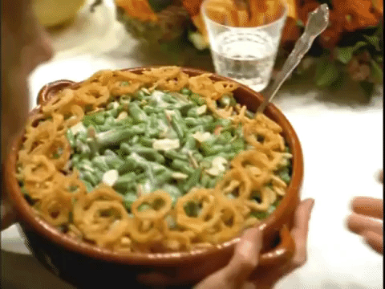

Green Bean Casserole

This page has a recipe to make a mean Green Bean Casserole
all with the usage of canned green beans! This casserole is
made by the company Progresso, serves 6 people, and takes
a total of 50 minutes to complete. Each serving equates to 170 calories; protein 2.8g; carbohydrates 17.3g; fat 9.5g; cholesterol 1.7mg; sodium 1163.4mg.
Ingredients:
- 18oz Can of Progresso Vegitable Classics Creamy Mushroom Soup
- 1 Teaspoon Soy Sauce
- 1 Dash of Ground Black Pepper
- 2 Tablespoons Progresso Plain Bread Crumbs
- 3x 14.5oz Cans of Green Giant Cut Green Beans, Drained
- 2.8oz Can French-Fried Onions
Directions:
- Heat oven to 350 degrees F. In ungreased 1 1/2-quart casserole, mix soup, soy sauce, pepper, bread crumbs, green beans and 2/3 cup of the onions.
- Bake about 30 minutes or until hot and bubbly. Stir; sprinkle with remaining onions.
- Bake about 10 minutes longer or until onions are golden brown.
Back to Front Page